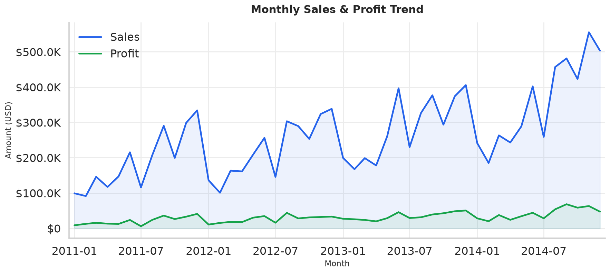

</>
Open to Data Analyst & Analytics roles
Hi, I'm Sonu Kumar
I turn |
Data Analyst skilled in Python, SQL, Power BI and Tableau — building reproducible analytics pipelines, interactive dashboards, and AI-powered automation that drive data-informed decisions.
01 — About
Data-driven from raw rows to real decisions
I'm a Data Analyst and final-year B.Tech (Computer Science) student who loves finding the story hidden inside messy datasets. My work spans the full analytics lifecycle — cleaning and modelling data, engineering features, building dashboards, and shipping reproducible, tested pipelines.
I work day-to-day with Python (pandas, NumPy, scikit-learn), SQL, and BI tools like Power BI and Tableau. Lately I've been combining classic analytics with AI-powered automation — using n8n, webhooks, and LLM APIs to enrich and qualify data at scale.
- Reproducible, tested analytics (pytest + CI)
- Interactive Power BI & Tableau dashboards
- ML modelling & big-data benchmarking
- AI workflow automation (n8n, APIs, MCP)
0
Analytics projects shipped
0
Records analysed
0
Industry certifications
0
Tools & frameworks
02 — Skills
A toolkit for the full data lifecycle
📊
Data Analysis & ML
📈
BI & Visualization
🗄️
Databases
⚙️
Automation & AI
🧰
Tools & Core CS
03 — Projects
Selected work
Real, end-to-end analytics — from reproducible Python packages to ML models and AI automation.

FeaturedAutonomous Data Enrichment & AI Qualification Pipeline
An automated outreach workflow built in n8n & Make.com that scrapes, parses and structures company research into JSON. Integrates an OpenAI-powered enrichment step and Vapi voice AI via REST to capture transcripts, analyse sentiment, and update records.
- End-to-end automation
- LLM enrichment
- Voice AI via REST
A multi-part study on Uber/Lyft and NYC taxi data: geospatial demand heatmaps with Folium, a scikit-learn regression pipeline for fare prediction, and a PySpark-vs-scikit-learn benchmark showing when distributed computing pays off.
- Folium heatmaps
- sklearn pipeline
- PySpark benchmark
Data Professional Survey Dashboard
An interactive Power BI dashboard analysing 1,000+ survey responses from data professionals. Cleaned and modelled the data, authored DAX measures, and generated insights on salary trends, job roles, and work-life balance.
- 1,000+ responses
- DAX measures
- Interactive report
Data Analytics Virtual Experience
A simulation of real data-analysis and forensic-technology tasks: examined datasets to identify anomalies, trends and business patterns, built visual reports and dashboards for stakeholders, and presented interpretation-based reporting.
- Forensic analytics
- Stakeholder reports
- Insight delivery
04 — Experience
Hands-on experience
2026
AI Automation & Data Enrichment
Independent Project
Engineered an autonomous outreach and lead-qualification workflow using n8n, Make.com, OpenAI and Vapi voice AI — scraping, structuring and enriching company data through REST integrations.
2026
Data Analytics Virtual Experience Program
Forage · Job Simulation
Completed simulated data-analysis and forensic-technology tasks — examining datasets for anomalies and trends, building visual dashboards for stakeholders, and demonstrating data interpretation and reporting.
2022 — 2026
B.Tech — Computer Science & Engineering
Indo Global College · IKG Punjab Technical University
Built a strong foundation in DSA, DBMS, OOP and operating systems while self-directing a portfolio of real-world data analytics and machine-learning projects.
05 — Certifications
Certifications & credentials
D
Data Analytics Job Simulation
Deloitte · via Forage
M
SOAR — AI to be Aware
Microsoft · Skill India / NCVET
A
Claude 101
Anthropic
06 — Contact
Let's build something with data
I'm open to Data Analyst and Analytics Engineering opportunities. Have a project, a role, or a question? I'd love to hear from you.